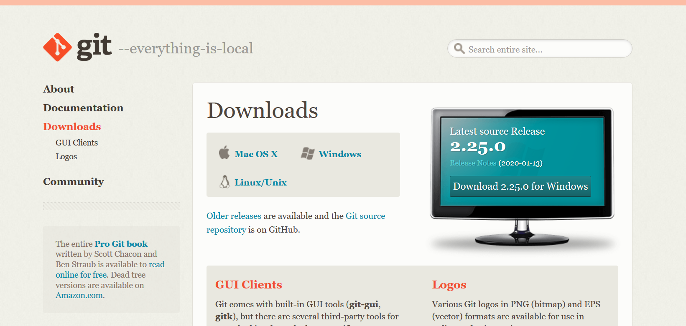
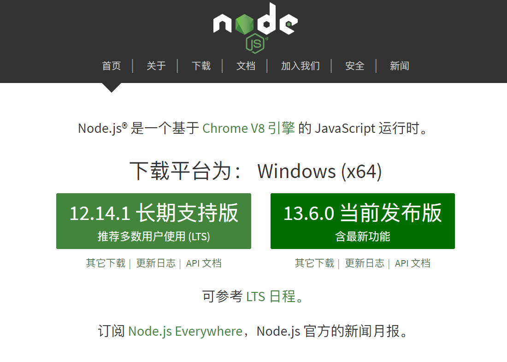

之前因为重装系统丢掉了已经搭建好的Hexo博客配置文件。经过这件事以后我深刻地记住了备份的重要性。趁着刚刚搭建完博客，于是写一篇文章水一下！
1.安装git软件
注意：此步需要添加git到环境变量，因为写这边文章时，笔者已经安装完成了。
即最后一步添加路径时选择Use Git from the Windows Command Prompt，这样我们就可以直接在命令提示符里打开git了。
2.安装nodejs
https://nodejs.org/dist/v13.6.0/node-v13.6.0-x64.msi
注意：此步需要添加nodejs到系统变量，选中下方即可。

然后一路next。
安装完毕后打开cmd输入node -v npm -v。如果显示版本号就说明安装完成了。

2.1给npm添加国内镜像源
由于众所周知的原因，官方源如此缓慢，故使用阿里爸爸的源进行加速。
1 | npm config set registry https://registry.npm.taobao.org |
3.安装hexo
在合适的地方新建一个文件夹，用来存放自己的博客文件。比如我的博客文件都存放在
C:\Users\wf09\Desktop\hexo
在该目录下右键点击Git Bash Here

在git命令行下依次输入以下命令：
1 | npm install hexo-cli -g #安装hexo相关组件 |
安装完成后，输入hexo s命令以启动服务器，网站会在 http://localhost:4000下启动。在服务器启动期间，Hexo会监视文件变动并自动更新，无须重启服务器。
可以通过 -p 选项指定其他端口。
1 | hexo server -p 5000 |
此时打开http://localhost:4000就可以成功启动网站了。
4.推送本地网页到Github
4.1链接Github
右键打开Git Bash，输入以下命令：
1 | git config --global user.name "username" |
用户名和邮件根据你注册GitHub的信息自行修改。
输入以下命令以生成SSH key：
1 | ssh-keygen -t rsa -C "username@your.site" |
打开github，在头像下面点击settings，再点击SSH and GPG keys，新建一个SSH，名称任意。
Git Bash 中输入：
1 | cat ~/.ssh/id_rsa.pub |
将输出的内容复制到框中，点击确定保存。
输入以下命令：
1 | ssh -T git@github.com |
如果出现一个警告，输入yes回车并忽略他就好。
如果回车看到：You’ve successfully authenticated, but GitHub does not provide shell access 。表示已成功连上github。
4.2设置hexo使其可以把网站发布在GitHub
打开博客根目录下的_config.yml文件：
找到以下配置
1 | deploy: |
默认分支是master
在博客根目录下打开Git Bash，安装一个插件：
1 | npm install hexo-deployer-git --save |
然后输入hexo new post "article title"，新建一篇文章。
打开你的博客根目录\source\_posts，会发现多了一个文件夹和一个markdown文件。文件夹用于存放图片等数据。
写完markdown文件后，依次输入：
1 | hexo g #生成静态网页 |
此时打开你的github.io主页就可以看到发布的文章了。